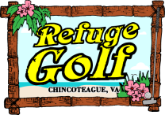
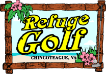
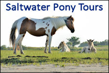
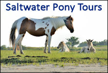

 

Visitors to Chincoteague often remark that they are surprised that there is never a shortage of things to do on our small Island, seven miles long and three miles wide. Chincoteague is uniquely situated to offer a wide array activities. Chincoteague Island lies right next door to Assateague Island, with the only publicly accessible beach between Ocean City, MD. and Virginia Beach, VA. Scroll down to view the wide array of activities available on Chincoteague Island.
Click here to read about 'Things To Do' in our Chincoteague Travel Blog.
Assateague Island is the home of the Chincoteague National Wildlife Refuge. Assateague Island offers a pristine public beach and incredible outdoor recreational opportunities.
More information about things to do on Assateague Island
Chincoteague offers a great place to take off with a bike or walk. Everything is close and has the perfect blend of small town and wilderness. Many of the roads on Chincoteague have sidewalks. The Chincoteague Bicycling Advisory Committee is taking great strides towards enhancing the recreational experience of the bicycling public on Chincoteague Island. Hiking and Biking on Assateague Island offers many views of nature that you would not see anywhere else. There are 15 miles of trails that wind through the marshes and forests and including a path to the Assateague Lighthouse.
Chincoteague offers a fantastic, paved nature trail on Hallie Whealton Smith Drive, which is located off of North Main Street, near Chincoteague High School. The Island Nature Trail is located along both sides of Hallie Whealton Smith Drive. The land where the trail is located represents some of last large tracts of undeveloped land on Chincoteague. The trail is a place where you can see wildlife in its natural habitat and it provides a safe haven for people to walk, run, ride their bike, bird-watch, or just enjoy the natural side of Chincoteague. To the south is an accessible 0.7 mile long paved loop path complete with benches, and an interpretive sign display. Pets are allowed along this portion of the trail. To the north is a natural surface trail that loops approximately 0.45 miles through pine forest and glade. No pets are allowed on this portion.
Guide to Biking and Hiking Historic Areas of Chincoteague (.pdf download)
Assateague Island Trail Map (.pdf download)
Boating is one of the more enjoyable pastimes on Chincoteague. If your interests are fishing, water-skiing, or just wanting to enjoy the water on a peaceful summers evening, the options are here for you to use your own boat or rent one. With the purchase of a City Boat Sticker, anyone wishing to put in their own boat will have access to 3 Town supported public boat ramps. Boat ramp stickers can be purchased at the Town Office, Police Station, and from the Harbormaster. Guided scenic/nature boat tours are also available.
Public Boat Ramps:
Curtis Merrit Harbor (Curtis Merritt Harbor Drive)
East Side Ramp (East Side Road)
Memorial Park (Memorial Park Drive)
Town Dock (Main Street)
Fir Landing (Deep Hole Road)
Click here for Chincoteague Island Boat Rentals
A boat tour is a must do activity for your Chincoteague Island vacation! You will gain a perspective of the area that is not achievable any other way.
Most of the tour boat companies offer “Scenic Nature Cruises” that will allow you experience the abundant wildlife and unspoiled nature of Chincoteague and Assateague Islands. Wild Ponies, Dolphins, Bald Eagles, and Sunsets over the Bay are just a few of the highlights you'll have a chance to experience on a Scenic Nature Cruise.
A couple of the tour boat companies offer specialized tours, such as a Pirate Ship adventure and hands-on Marine Ecology tour. Click here for a complete list of Chincoteague Island Tour Boat Companies.
Chincoteague Island Tour Boat Companies
Chincoteague Island Charterboat Association
Crabbing on Assateague and Chincoteague Islands is one of the favorite pastimes for both the local residents and visitors alike. The preferred method for crabbing is with a net and baited line. All of the needed materials can be purchased at any local fishing shop, or hardware store. Most people like to use old pieces of raw chicken, tied to a line with a weight, sitting at the bottom of the water. The crabs will try to catch the bait and are lured into your waiting crab net. Cook the crabs by steaming them in a large crab pot with a generous amount of Old Bay Seasoning, and you can enjoy one of the Eastern Shores most famous delicacy. The size restrictions and limits in Virginia are enforced as a conservation measure. Crabs must measure 5" from back shell point-to-point.
Clamming is another water pastime that is also plentiful on the Eastern Shore. The favored method is raking while wadding in generally shallow water. The best times being during the low tides. Another way is walking in the sand at low tide and 'signing' them. That means looking for the little keyhole indentations in the sand. By digging just under the surface of the sand, you will find the clams. Some of the Scenic Tour Boats offer clamming excursions.
Attention all dog lovers who can’t bear to leave their best friends behind on vacation. The Town of Chincoteague Island has a fabulous dog park!
More information about the Chincoteague Dog Park
Chincoteague Island Farmers and Artisans Market
Chincoteague Seafood Festival
Easter Decoy and Art Festival
Chincoteague Island Blueberry Festival
Chincoteague Oyster Festival
Some of the best fishing grounds on the Mid-Atlantic Coast are found in the local waters surrounding Chincoteague Island. There are several different ways you can go fishing while vacationing in Chincoteague, including fishing from the surf on Assateague Island, from a public pier on Chincoteague, launching your own boat at a public boat ramp, renting a boat, or on a Charterboat. You can purchase fishing supplies from a local Bait and Tackle Shop. On a Charterboat all your needed fishing supplies are typically included.
Click on the following links for more information:
Chincoteague Island Charterboats
Chincoteague Island Bait and Tackle Shops
Chincoteague Island Boat Rentals
Chincoteague Island Family YMCA
Herbert H. Bateman Visitor Center
Chincoteague Island offers several beautiful parks for the enjoyment and recreation of residents and visitors. We highly reccomend taking advantage of these well maintained spaces while your on vacation.
Robert N. Reed Downtown Waterfront Park
Robert N. Reed Downtown Waterfront Park is located on Main Street in the heart of downtown. The park offers recreational opportunities and many festivals and events are held here. There are currently 10 boat slips available for rent to transient boats that are in excess of 26’to 50’ in length. The park is ADA accessible, inclusive of boat slips. For information about renting a boat slip call the Town Office at 757-336-6519. Be sure to bring your fishing pole and cast your line off the new fishing pier (no license required). Find on Google Maps
Veteran's Memorial Park
The Veteran's Memorial Park is located on Eastside Road. The park has tennis courts, basketball courts, playground equipment, fishing/crabbing pier, ball field, boat ramp, skate park, pavilion and restrooms. The pavilion may be reserved for groups through a permit issued by the Town for approval. It is recommended that you contact the Town Office, at 757-336-6519, to check availability. There is no fee for reserving the pavilion. The Commonwealth of Virginia enforces a recreational fishing license for the water surrounding Chincoteague. The Town of Chincoteague purchases a fishing license for the Veteran's Memorial Park fishing pier, so an individual license is not required. Find on Google Maps
Donald J. Leonard Park
The Donald J. Leonard Park is located across from the Chincoteague Combined School on North Main Street and protects an open view of Chincoteague Bay with approximately 600 feet of water frontage. Over 2.7 acres of waterfront land has been left in its natural state for the enjoyment of the citizens and visitors alike. Park facilities allow for off street parking up to 10 cars, picnic tables, and kayak access to the Virginia Seaside Water Trail. Find on Google Maps
NASA has been launching small rockets from Wallops Island (the Barrier Island to south of Chincoteague) since 1945. In recent years, however, Wallops has become better known for the large scale rocket launch taking place from the facility. Rockets like Northrup Grumman’s Antares, which routinely launches from Wallops Island, carrying supplies to the International Space Station (ISS).